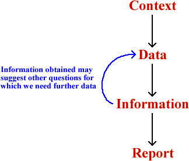
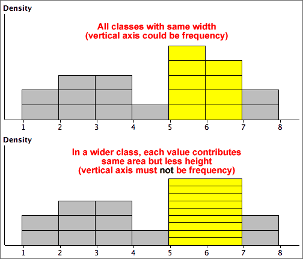

If you don't want to print now,
What is the purpose of Statistics?
When non-statisticians think of statistics, the first thing that usually comes to mind is data. Large amounts of economic, social and administrative data are routinely collected and published. Most researchers also collect data. Statistical analysis uses data, but the data are not the goal.
Data are the basic commodity of the statistics. Without data, there is no information on which to reach conclusions or base decisions.
Data contain information.
The purpose of statistics is to extract information from data.
Large data sets must be summarised before patterns and relationships can be seen. In smaller data sets, the problem is usually that there is not enough information to get a clear answer to questions of importance. Statistical methods are needed to describe precision and to ensure that the highest precision is obtained.
Context
In general, users of statistics are neither interested in data or in statistical methods, but are only interested in questions in their own subject area.
The aim of statistics is to supply useful information to people whose main area of expertise is not statistics. Statistical methods are only useful if they can extract information from data to help answer discipline-specific questions. The underlying context is therefore the most important aspect of any statistical analysis.
If you are not primarily a statistician, you will appreciate statistical methods when they are needed in your career!
Simple series of steps
The simplest application of statistics addresses a single question in the context of some practical subject area.
Statistics has a role to play in all stages of this process.
Feedback
The initial question is usually less well defined and a single pass through the process is not enough.

An example of feedback arises when a small fraction of the data is initially collected and analysed. The information obtained from this pilot study is used to refine the data collection process.
Another example of feedback occurs when the initial analysis reveals unusual or unexpected features in the data. Such features may suggest further questions and therefore further data collection.
Continuous quality improvement
Statistical analysis is an important part of long-term monitoring and improvement of the performance of many types of system. This process is often called continuous quality improvement.
The statistical part of the process again involves a feedback cycle of data collection and analysis, aimed at improving aspects of the system.

The Plan-Do-Check-Act cycle is most often used in commerce and industry, but can also be used to 'improve' many biological and other systems.
Data structure
Context is critically important, but the statistical methods that can be used on data depend mostly on the internal structure of the data.
|
|
|
||||||||||||||||||
These three data sets have the same basic structure, so the same statistical methods can be applied to all of them.
Variables and 'individuals'
Most data sets have a fairly simple structure. One or more measurements ('variables') are recorded from each of a collection of 'individuals' (also called 'cases' or 'units'). The data can be presented in a data matrix.

Most variables in a data set are either numerical or categorical.
Numerical variables
These have values that are numbers and can be further classified into:
Statistical methods that can be used for continuous variables are not always appropriate for discrete variables.
Categorical variables
The values of a categorical variable are selected from a small group of categories. A further classification is:
Most statistical methods for categorical data can be applied to both ordinal and nominal variables.
Labels
In some data sets, each individual has a unique 'name' that can be used to identify it. We call this a label variable.
Warning!
When you see a column of numbers in your data matrix, do not assume that it is a numerical variable.
Numbers are sometimes used as codes for categorical or label variables.
Categorical variables and groups
A categorical variable can be used to split the individuals in a data set into groups. We might treat individuals with values "A", "B", etc. as belonging to different groups.
Conversely, if data were separately collected from different groups of individuals, the resulting data sets could be combined with a categorical variable distinguishing between the groups. Its values might be defined as "A", "B", etc. to identify the group membership of any individual.
A categorical variable and groups are often two ways of representing the same data.
Data presented in a separate list for each group are called unstacked whereas if the data are presented as a single list alongside a categorical variable, they are called stacked.
Signal and noise
Electronics and telecommunications engineers distinguish between the signal that is being communicated between two locations and the random noise that is added by the communications channel. The noise degrades the signal and, in the worst cases, can make the signal difficult to detect.
The word "CAST" is hard to read in the following noisy image.

Mixed class widths
For some data sets, wider classes give a smoother histogram in some ranges of values (e.g. in the tail of a distribution) and narrower classes are better in other parts of the distribution (usually where there is greater density of values).
In a correctly drawn histogram, each value contributes the same area.
Histograms can be drawn with mixed class widths, but it would be badly misleading to make the rectangle heights equal to either the class frequency or relative frequency.

or equivalently,
x = μ + z × σ
Probabilities and z-scores
Any probability (area) relating to a normally distributed random variable, X, can be expressed in terms of z-scores:

If X has a normal distribution, then Z has a standard normal distribution with mean µ = 0 and standard deviation σ = 1.
Probabilities for the standard normal distribution
After translating a probability about X into one about a z-score, it is easier to evaluate it.

Areas under the standard normal curve can be evaluated in Excel and most statistical programs. Statistical tables can also be used (see later).
Evaluating other probabilities
Other probabilities about normal distributions can be found using the following properties:
Probability of higher value

Probability of value between two others

In both cases, the conversion can be done either before or after translating the required probability from x-values to z-scores.
Standard normal probabilities without a computer
Probabilities about z-scores can be found without a computer. Most introductory statistics textbooks contain printed tables with left-tail probabilities for the standard normal distribution.

These tables can be used after the required probability has been translated into a problem relating to the standard normal distribution.
Finding an x-value from a probability
Finding quantiles
To find the x-value for which there is probability p of a normal distribution being lower,
The first step of this process can be done with Excel (or other statistical software) or statistical tables can be used. For example, the diagram below shows how to find the z-score such that there is probability 0.9 of being less.

Translating from a z-score to the corresponding x-value is done with the formula,
x = μ + z σ